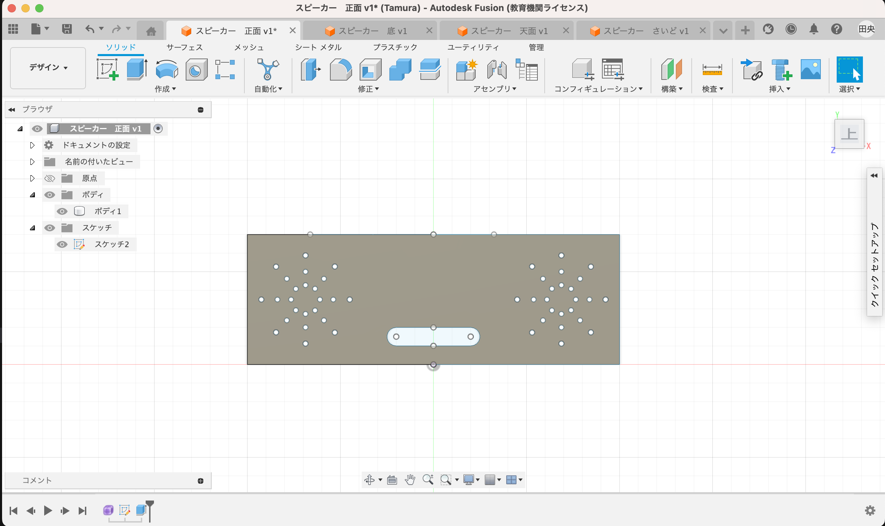
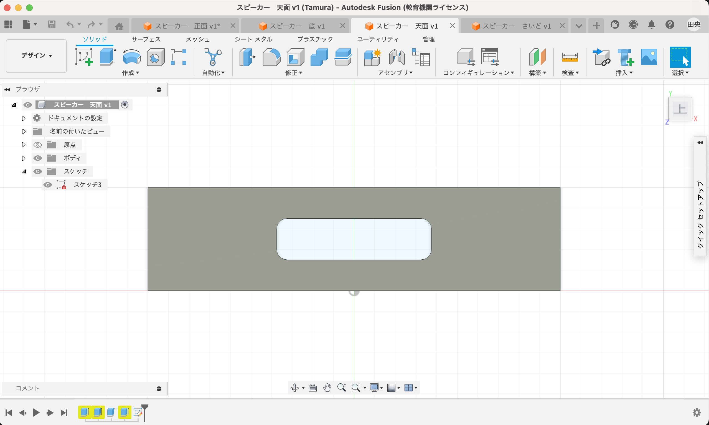
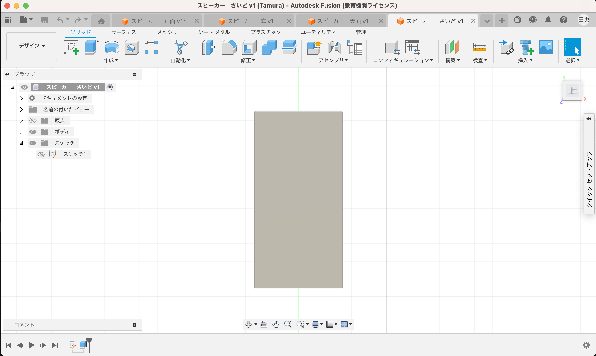
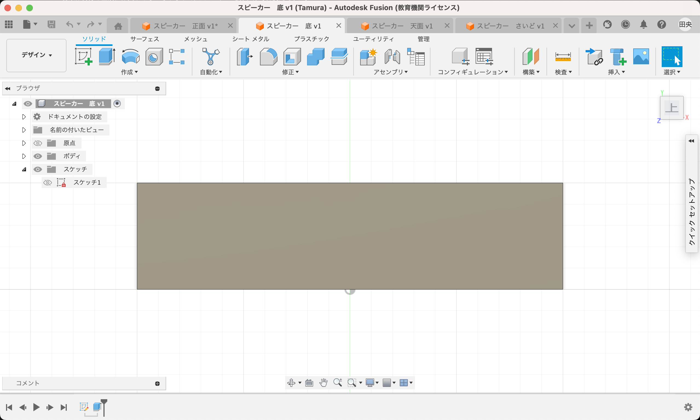
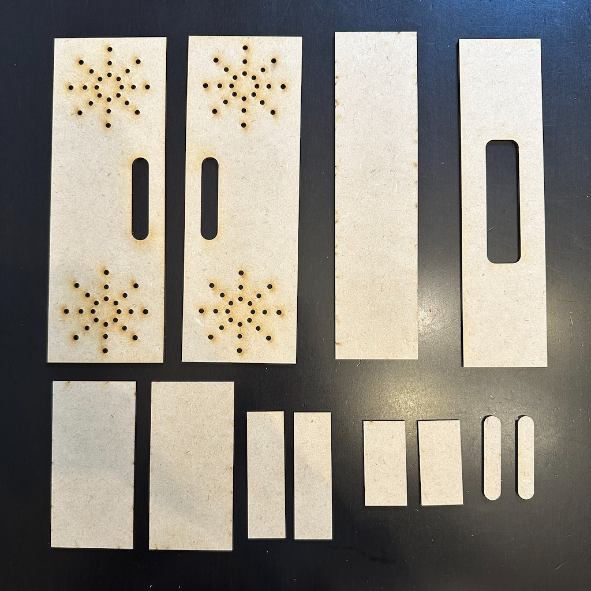
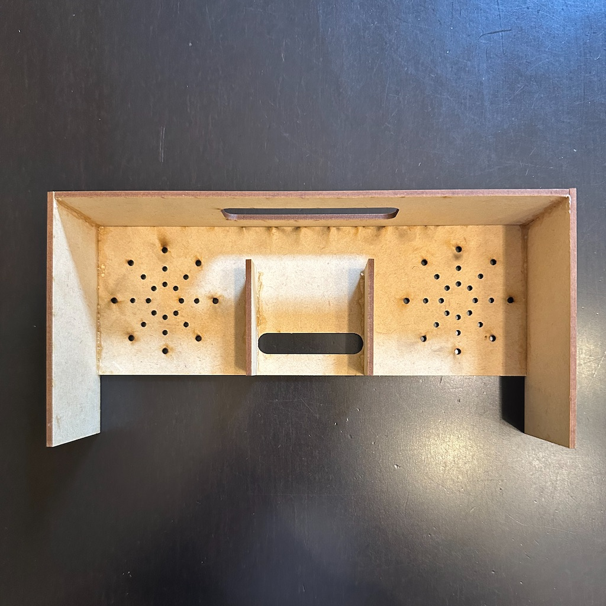
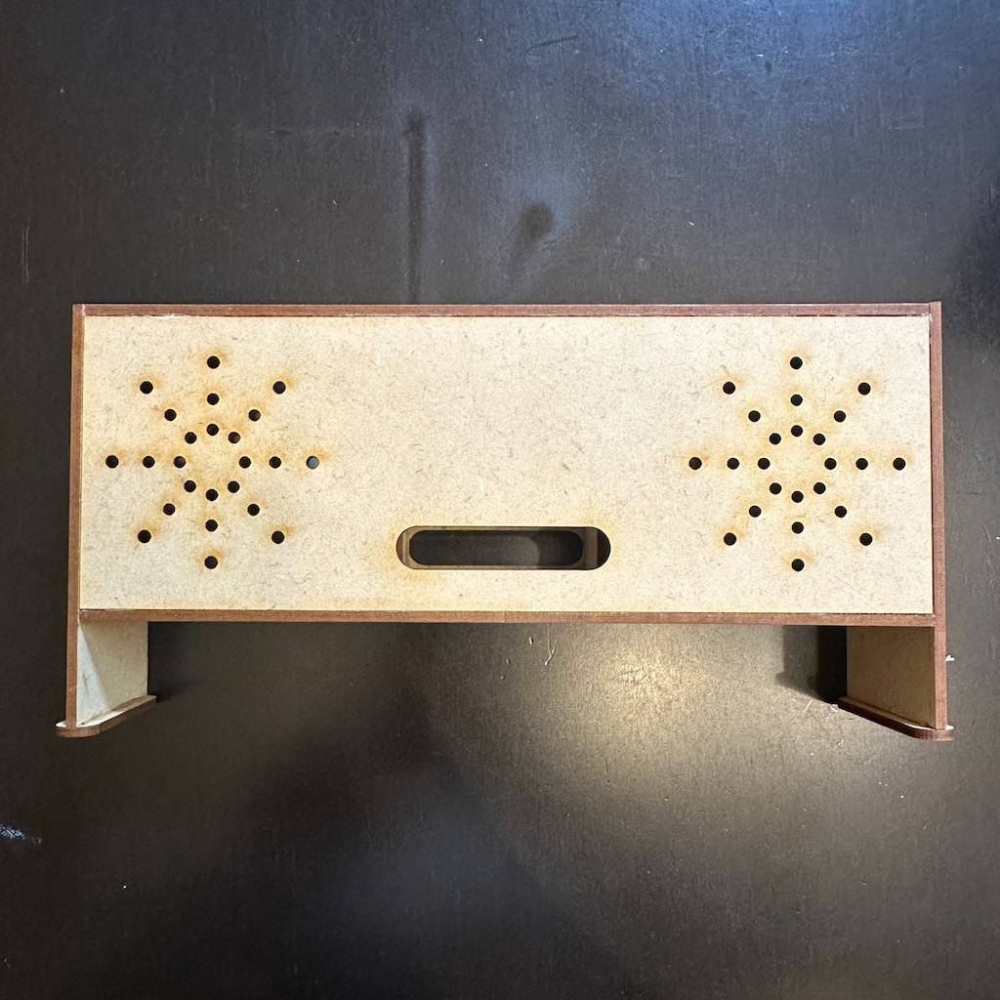
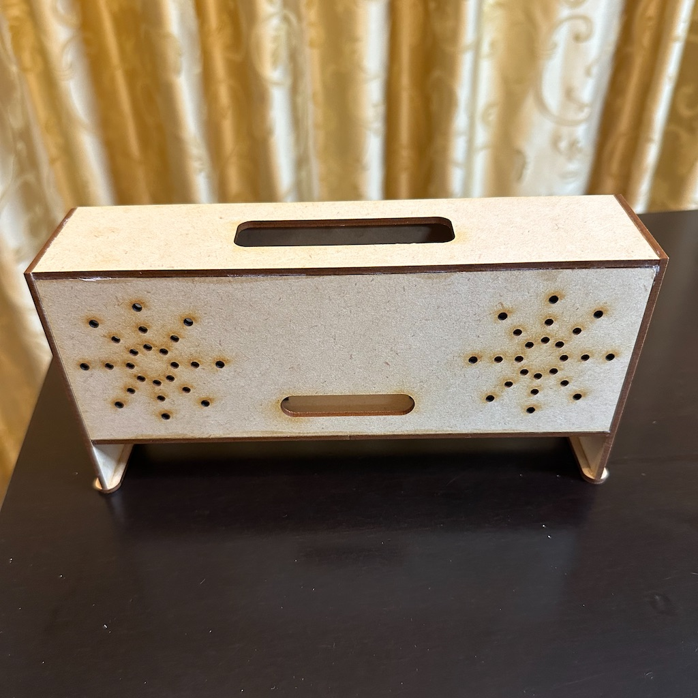
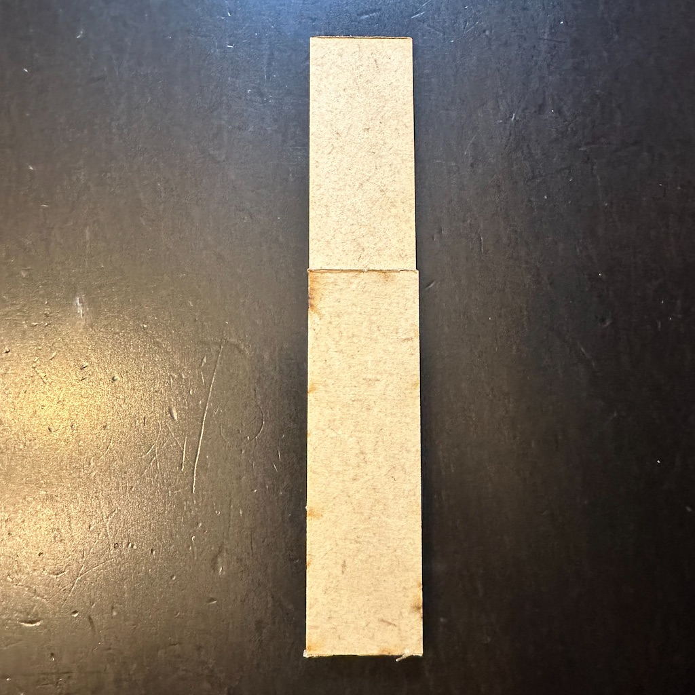
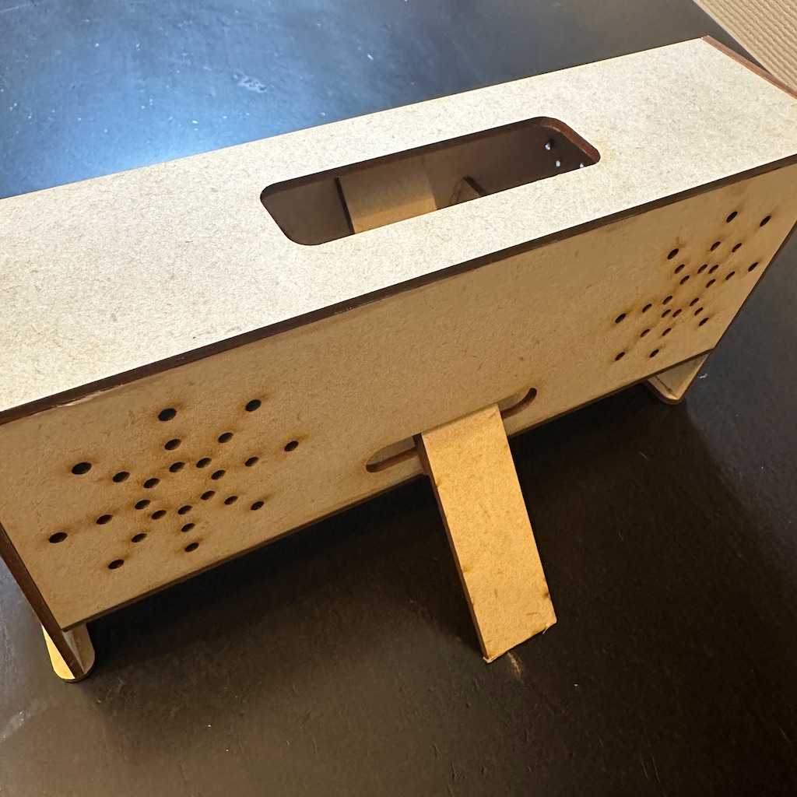

最終課題では日常生活の中で普通に使えるものを作りたいと考えていた。 そこで思いついたのがスピーカーである。 音楽は自分の生活に欠かせないので、スピーカーを作れば毎日使うと考えた。 使用素材はMDFボード 厚さ2.5mmと接着剤、機材はレーザーカッターを使用することにした。
オーディオに詳しい人ならあれ？と思った人もいるかもしれない。 スピーカーを作るというのに材料にコーンやコードがないということだ。 スピーカーといえば3.5mmオーディオジャックやUSBを繋いで鳴らすものが一般的であるが、 そんなたいそうなものを作る技術はない。
ここでポイントとなるのは、音の反響である。 囲われ空間で音を鳴らすと響いて大きく聞こえる。今回はこの仕組みを利用して製作していく。 バイクがトンネルに入ると音が大きく聞こえるのと同じ原理である。
①正面・裏面 
正面と裏面は同じデータを使う。このパーツは2つ必要。
くり抜いた部品は後で再利用する。音が出る穴の数は適当。
正面/裏面
②天面
この穴にスマホを差し込むことになる。
天面

③側面
このパーツも２つ必要。
側面

④底面
底面

データを元にカットしたものが以下の画像である。

出来上がった部品を組み立てていく。



MDF素材がおしゃれでいい感じ。
早速使ってみるが、問題が発生した。支えがないと、スマホの重みに耐えられずに後ろに倒れてしまうのだ。 ここで急遽、端材を使ってつっかえ棒を作ることにした。最終的にびくともしないくらい安定するようになった。


音質は昔のラジオみたいな雰囲気。角が取れたような音質でいい感じ。 そのスピーカーの魅力は音質ではなく、どこでも使えるところや、何回でも作り直せるところであると考えている。